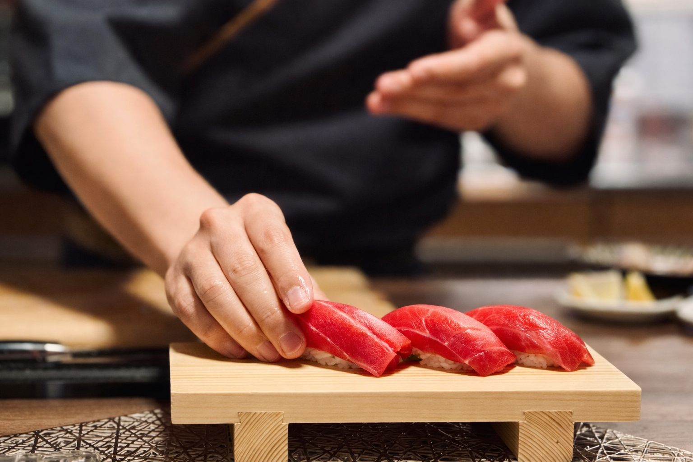
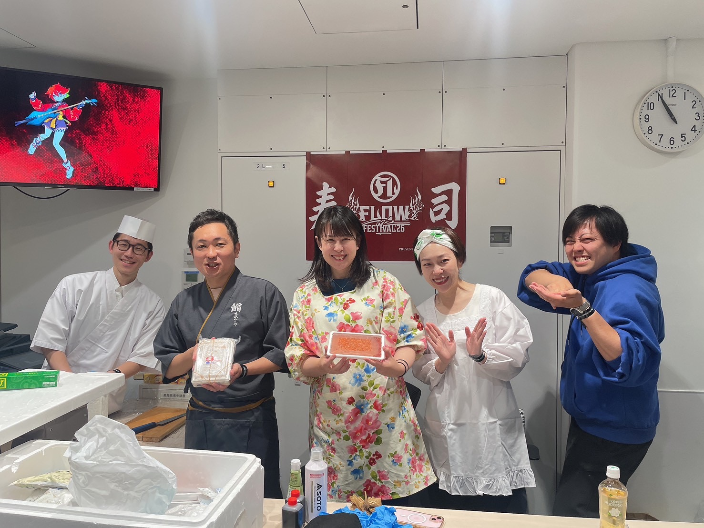
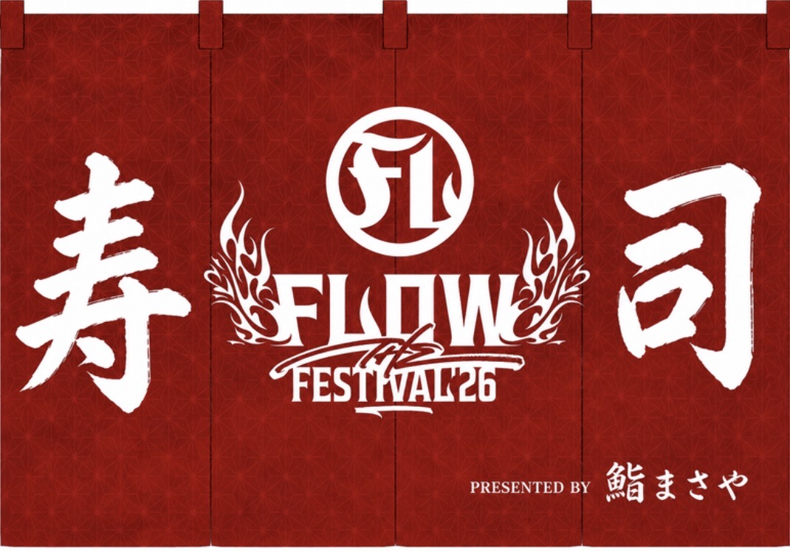
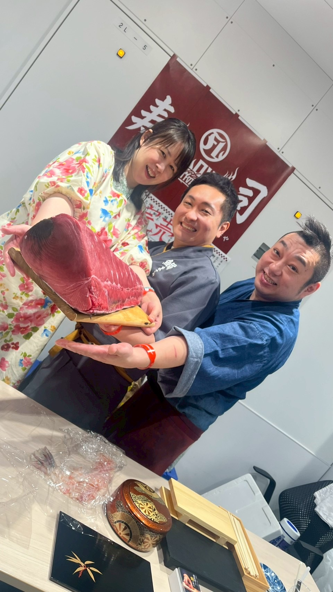
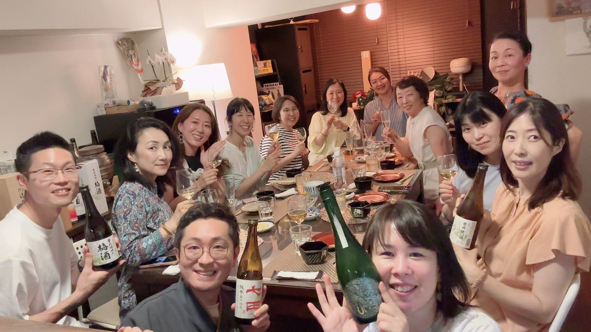
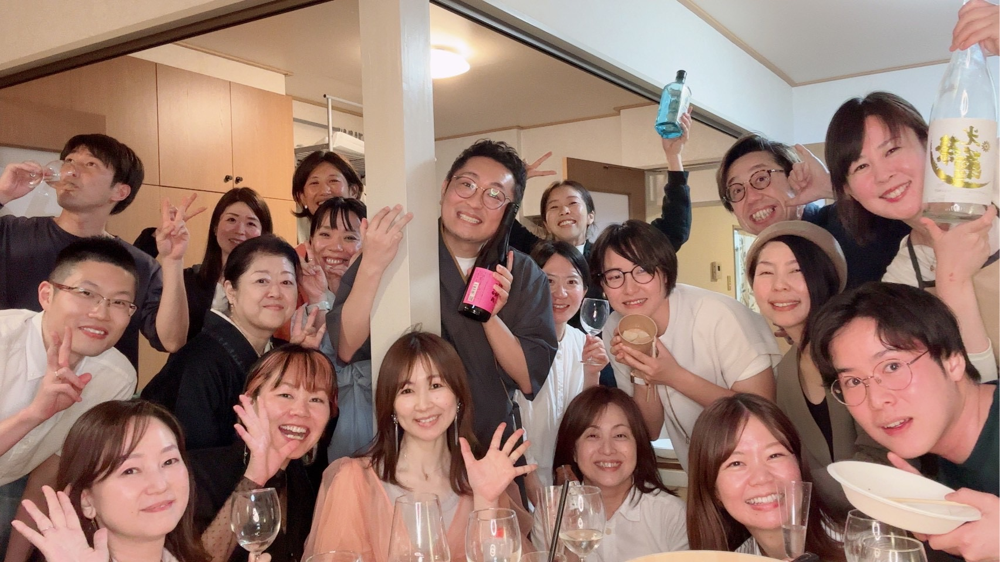
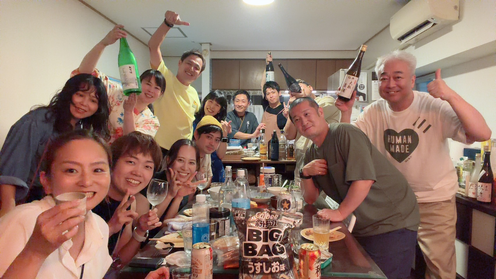
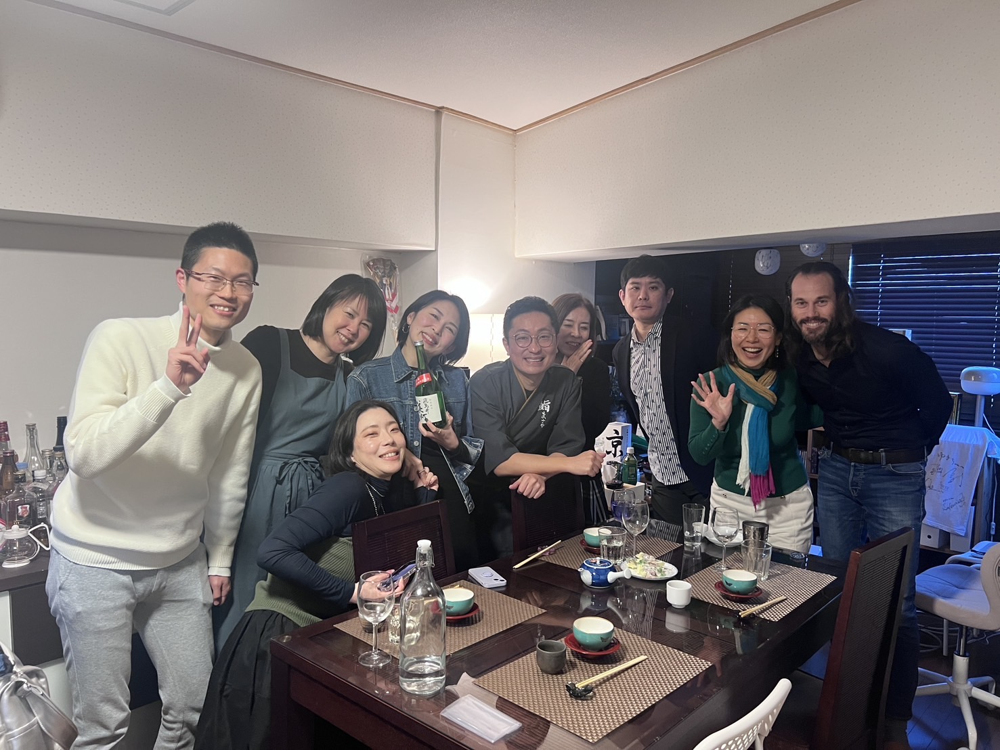
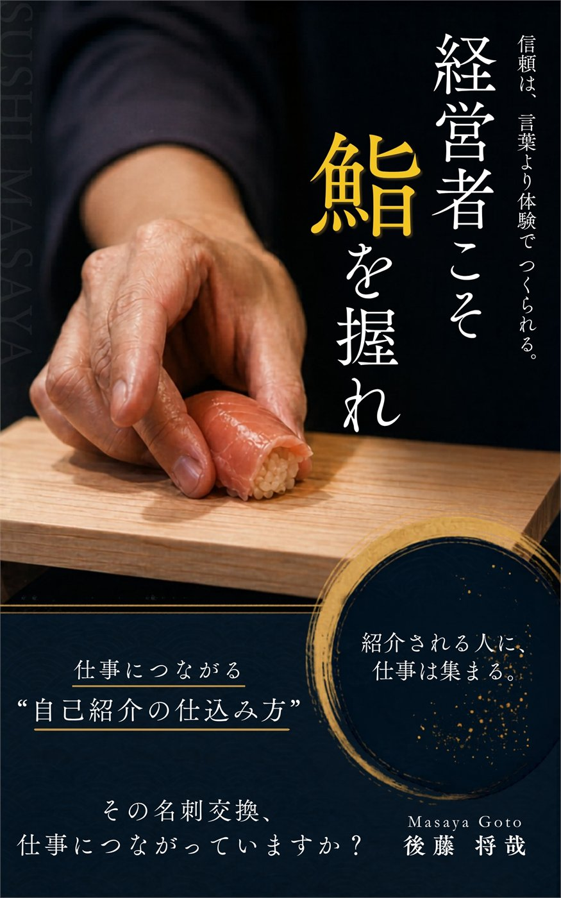

鮨を学びたい
3時間の鮨実践講座
自分で一貫を握り、家族や仲間にふるまうところまでを実践する少人数制の講座です。
講座について見る
鮨を握るビジネスプロデューサー
鮨を握れるようになって、変わったのは技術ではありません。
人との「出会い方」でした。
紹介制鮨会「鮨まさや」主宰 ／ 著書『経営者こそ、鮨を握れ。』
興味のある入口からご覧ください。
自分で一貫を握り、家族や仲間にふるまうところまでを実践する少人数制の講座です。
講座について見る経営者会や懇親会など、その場に合わせて鮨をきっかけに会話が生まれる体験を企画します。
開催相談について見るなぜ経営者に鮨なのか。僕自身の変化と、鮨が人との関係に与えたものを書きました。
著書について見る独立したばかりの頃、交流会に出て、自己紹介を磨き、名刺を配っていました。
それでも、新しい出会いはなかなか仕事につながりませんでした。
変化が起きたのは、鮨を握るようになってからです。
「趣味で鮨職人をしています」と言うだけで、相手から質問が生まれ、会話が始まる。
鮨をきっかけに、紹介や相談、仕事へつながる出会いが増えていきました。
鮨が僕を変えたんじゃない。
鮨が、僕の中にあった才能を引き出してくれた。
鮨は、新しい自分になるためのものではありません。
もともと自分の中にあった強みを、相手に伝わる形にする入口でした。

鮨を握るビジネスプロデューサー
13年間の会社員生活を経て、自身の働き方や人との関わり方を見つめ直す中で、未経験から鮨職人の道へ。
「鮨は最強のコミュニケーションツール」を軸に、紹介だけで席が埋まる紹介制鮨会「鮨まさや」を主宰。著書に『経営者こそ、鮨を握れ。』。
現在は、鮨会の企画・運営にとどまらず、企業やコミュニティの会食・紹介・交流を、記憶に残り、次のご縁につながる場として設計している。
もちろん、3時間でプロにはなれません。
でも、自分で一貫を握って、家族や仲間にふるまえるところまでいけます。
経営者・個人事業主を対象に、少人数で鮨を握る実践講座を開催しています。自分で握った鮨を目の前の人に出す。その体験から、自然に会話が始まります。
少人数制・リクエスト開催。日程は個別に調整します。
3時間
初心者向け・少人数制。鮨を握る技術だけでなく、目の前の人をもてなし、会話が生まれる場まで体験します。
経営者会、コミュニティ、企業の懇親会、紹介の場などで、鮨をきっかけに会話が生まれる体験型イベントを企画します。
ただ鮨を提供するのではなく、誰が集まり、どんな会話が生まれ、次にどんなご縁につながるのかまで含めて、その場に合う流れを一緒に設計します。
人数、会場、目的に合わせて、一回限りの開催から継続企画まで個別にご相談いただけます。
内容が固まっていなくても大丈夫です。2分程度で入力できます。

開催実績 鮨リトリート / 2026.4
都内のプライベート空間で、10名限定の鮨リトリートを開催しました。参加者自身が鮨を握り、同じ場で食べる体験を通じて交流しました。
『スタンフォード式 最高の休み方』著者・鈴木亜佐子氏を特別ゲストに迎え、10名の参加者とともに交流しました
大規模イベントでの提供実績
FLOW THE FESTIVAL 2026の楽屋で、出演アーティスト向けに鮨をふるまいました。
少人数の鮨会だけでなく、大型音楽フェスの現場でも、鮨まさやとして提供を行っています。
FLOW THE FESTIVAL 2026 公式サイトを見る


イベント名・写真は掲載許可の範囲で使用しています。




参加者の声
鮨握り体験交流会に参加した方の声を、動画でご覧いただけます。

著書
名刺を配り、自己紹介を磨いても、なかなか仕事につながらなかった。そんな僕の出会い方を変えたのが、鮨でした。
なぜ鮨を握ることが人との関係を変え、自分の中にあった強みを伝わる形にしてくれたのか。その体験を一冊にまとめています。
LINEでは、読者特典、鮨会・実践講座の開催案内、最新情報をお届けしています。